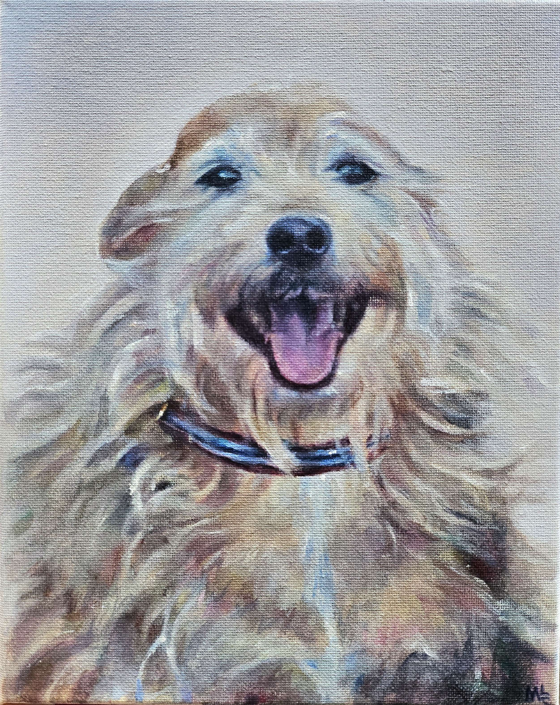
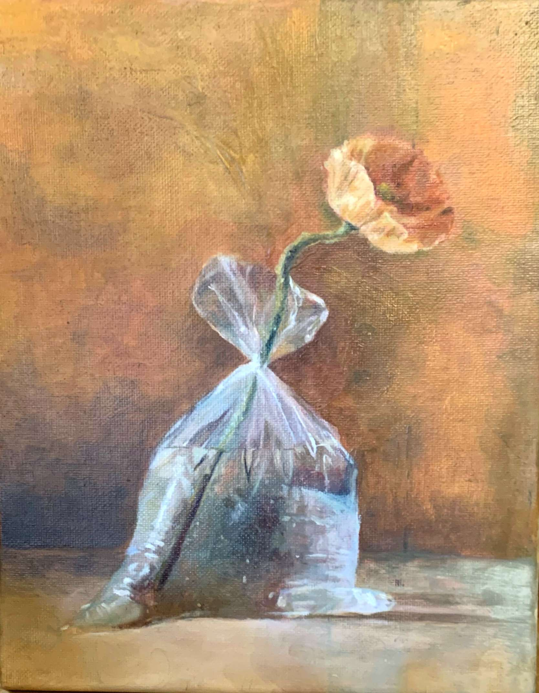
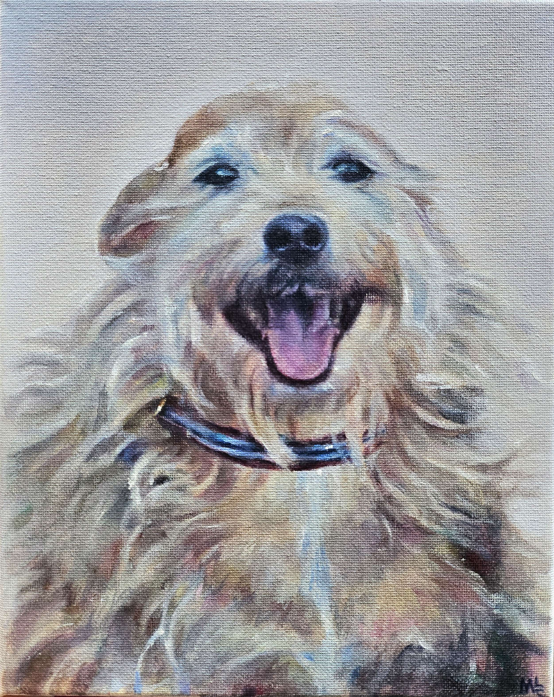
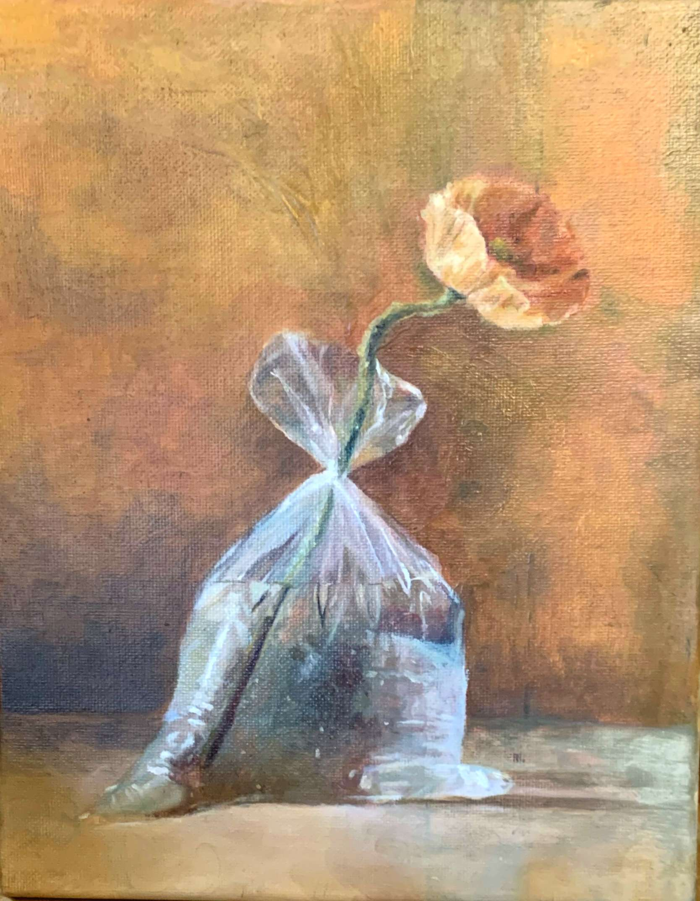

art.
I specialize in creating vibrant and captivating paintings of any subject. I love experimenting with color using primarily acrylic and water-soluable oil paints, especially with human and animal portraits. Each piece is crafted with love and careful attention to detail based on the provided reference image(s).
Commission Info
- 8"x10" canvas, 0.75" depth (custom sizing available--see below)
- $70 starting price
- Choice of oil, acrylic, or mixed media
The client may request a custom canvas size. Price will depend on said size and complexity of the piece. Large works require a 25% upfront fee.
Please contact marycotrupi@gmail.com for additional questions or more info!
 


